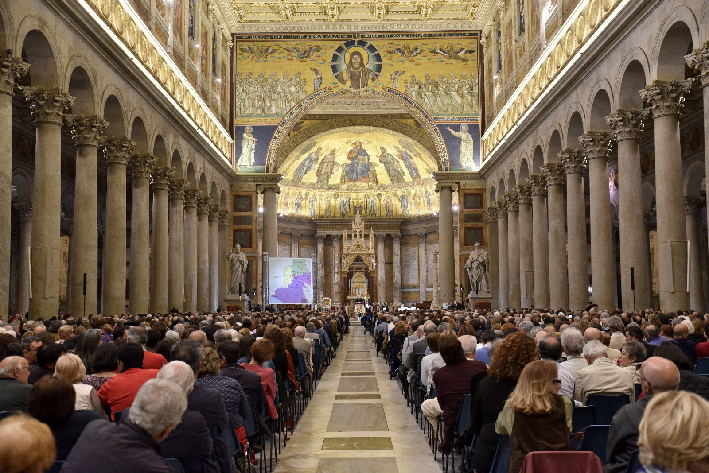

<section>
  <div class="content">
    <div class="row">
      <div class="col-md-6 offset-md-3 corpo-post">
        <p>
          
        </p>
        <p class="titulo">São definidos os destinos das 25 comunidades que o Papa Francisco enviará em missão no dia 5 de maio</p>
        <p>
          <strong>Em um encontro na Basílica de São Paulo Extramuros, em Roma, em razão do encontro do 50º aniversário do Caminho,
            receberam destino à distintas paróquias da periferia</strong>
        </p>

        <p>
          O Caminho Neocatecumenal celebrou no domingo, 22 de abril, na Basílica de São Paulo Extramuros, um encontro em que receberam
          destino as 25 comunidades que serão enviadas em missão pelo Papa Francisco no próximo 5 de maio, na celebração
          do 50º aniversário do Caminho em Roma.
        </p>
        <p>
          O encontro foi conduzido pela equipe internacional responsável pelo Caminho,
          <strong>Kiko Argüello, María Ascensión Romero e Pe. Mario Pezzi.</strong>
        </p>
        <p>
          Estavam presentes as comunidades que já terminaram o Caminho e renovaram solenemente as promessas batismais, e as paróquias
          que solicitaram a ajuda desta comunidades manifestando sua disposição em acolhe-las.
        </p>
        <p>
          Durante a celebração,
          <strong>Argüello recordou que</strong> “o Caminho se termina evangelizando, indo aos afastados das periferias”.
        </p>
        <p>
          O iniciador do Caminho também advertiu sobre o problema de se instalar e perder o zelo por evangelizar: “Quando nos instalamos,
          entramos em uma espécie de enfermidade: a tibieza”.
        </p>
        <p>
          “O tíbio perdeu o zelo, não quer ir anunciar pelas ruas, mas prefere ficar em casa vendo televisão. Também é horrível perder
          o zelo para os presbíteros, catequistas, bispos... mas quando somos enviados a um lugar, em nome da Igreja, este
          perigo cessa porque não estamos vivendo nossa vida, mas vivemos a vida de Outro (Cristo) que nos envia ali e isso
          protege as raízes de nossa fé e impede que nos acomodemos e instalemos”.
        </p>
        <p>
          Na celebração foi proclamado o Evangelho de São João 17, 18-26 e Argüello anunciou o Querigma.
        </p>
        <p>
          <strong>Audiência com o Papa Francisco</strong>
        </p>
        <p>
          Em 19 de abril, o
          <strong>Papa Francisco</strong> recebeu a equipe internacional responsável pelo Caminho Neocatecumenal no Vaticano.
        </p>
        <p>
          O objetivo principal da reunião foi falar sobre o 50º aniversário do Caminho que se comemorará com um grande encontro presidido
          pelo Papa em Tor Verganta no próximo 5 de maio.
        </p>
        <p>
          <strong>Um grande encontro para o 50º aniversário</strong>
        </p>
        <p>
          O Caminho Neocatecumenal celebrará em 5 de maio um grande encontro internacional em razão do 50º aniversário de sua chegada
          em Roma. O evento acontecerá em Tor Vergata e
          <strong>contará com a presença de dois mil brasileiros.</strong>

        </p>
        <p>
          Durante a celebração,
          <strong>o Papa Francisco fará o envio de 34 novas missio ad gentes </strong>
          que, a pedido de outros tantos bispos, evangelizarão em lugares secularizados ou com pouca presença da Igreja, em cidades
          de todo o mundo.
        </p>
        <p>
          Francisco
          <strong>enviará 25 comunidades das paróquias de Roma – que concluíram esta iniciação cristã – e se ofereceram para serem
            enviadas</strong> à paróquias da periferia onde sua ajuda foi solicitada para chamar os afastados da fé.
        </p>
      </div>
    </div>
  </div>
</section>